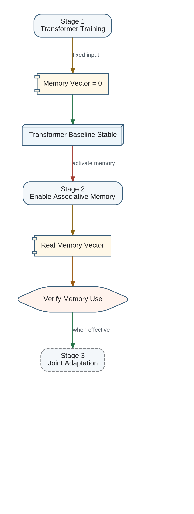

The Transformer and Associative Memory should be trained in stages rather than optimized as a single coupled system from the beginning. This reduces optimization complexity and gives each subsystem a stable role before the Memory Vector interface is activated.

Stage 1 — Transformer Training with a Null Memory Vector
During the first stage, the Transformer receives a fixed canonical null Memory Vector, normally the all-zero vector. The Transformer learns language interpretation, reasoning, planning, and answer generation without depending on an immature external memory subsystem.
Stage 2 — Associative Memory Integration
After the Transformer baseline has stabilized, Associative Memory is enabled and explicit READ operations begin supplying non-zero canonical Memory Vectors. Training then teaches the Transformer to condition its reasoning on this additional source of knowledge.
Possible forced utilization
It may therefore be necessary to force Memory Vector utilization during part of training. Candidate mechanisms include examples that cannot be solved without memory, controlled removal of equivalent context, auxiliary losses measuring memory dependence, progressive gating, or temporary constraints on the parameter-only path.
Stage 3 — Joint Adaptation
Joint adaptation should begin only after the Transformer can use the Memory Vector and Associative Memory has reached sufficient representational maturity. The two subsystems remain independently replaceable because the canonical Memory Vector is their stable public interface.